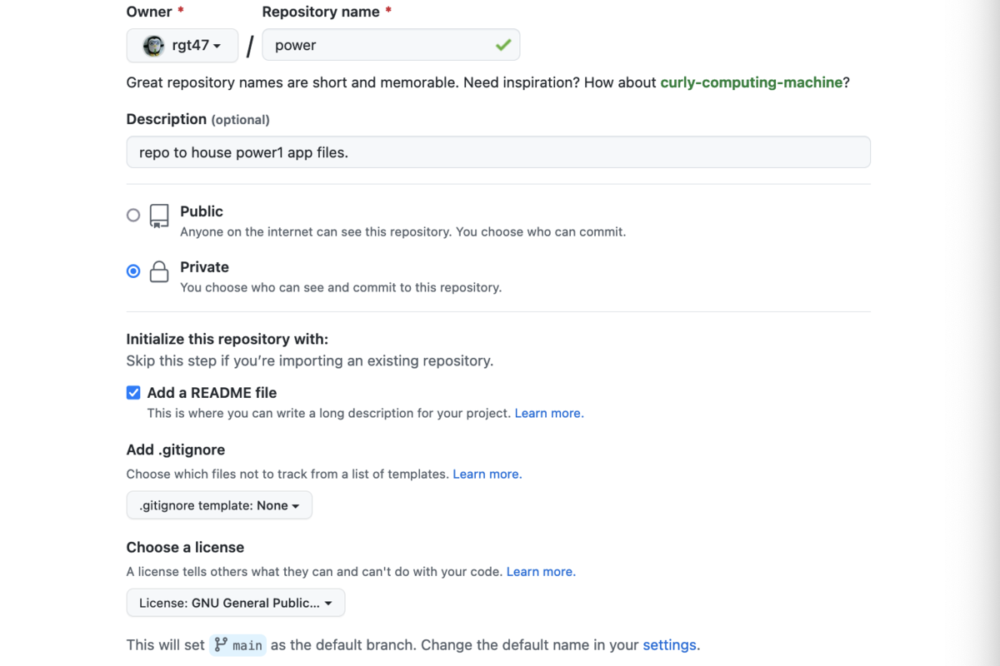

Research Backup Architecture: Ongoing System and GitHub Archival
2026-05-17 16:55 PDT
Version control is the starting point; a backup architecture is the surrounding structure that makes it durable.
Introduction
GitHub alone is not a backup. That claim sounds counterintuitive when you have been committing and pushing faithfully for years, but it describes a real architectural gap. GitHub is a remote source-of-truth tier, not a backup tier: it holds one copy, operated by one company, under one pricing model, with no local fallback. A suspended account, a platform outage, or a credential compromise can sever access immediately.
The same gap appears at the local level. Manual git push commands get skipped during busy stretches. An external drive’s Time Machine backup silently stops when the drive is not connected. Cloud sync replicates files but does not preserve commit history. Each tool covers one slice of the risk surface; none covers it entirely.
This post brings together two complementary approaches to research backup:
- An ongoing three-tier system that runs automatically every 15 minutes, pushing all dirty Git repositories to GitHub, synchronizing files to cloud storage, and relying on Time Machine for system-wide safety.
- A bulk GitHub archival procedure that creates verified local mirrors of 400+ private repositories, exports all GitHub-side metadata (issues, PRs, releases, wikis), and supports selective deletion after confirmed verification.
Together they form a complete backup architecture: the ongoing system keeps the day-to-day workflow protected; the archival procedure handles the periodic task of mirroring GitHub itself, so that the source- of-truth tier survives the loss of the account or platform.
More formally, both components document the backup layer of the Workflow Construct described in A Workflow Construct for the Modern Data Scientist. Post 52 names backup as a load-bearing layer under the principle ‘two tiers or it is not backup’; the configuration here implements three active tiers for daily use, plus a fourth archival leaf that mirrors GitHub off-platform.
Motivations
The following considerations motivated this architecture:
- Having 400+ private repositories on GitHub with no local mirrors creates a single point of failure for years of accumulated work.
- Running
git pushmanually and forgetting for days at a time leaves important work vulnerable to local disk failure. - A plain
git clonecaptures code history but misses issues, pull requests, releases, and wiki content that can be more valuable than the code itself. - A colleague’s hard-drive failure, which erased months of analytical work, demonstrated that a single backup tier is never sufficient.
- Cloud synchronization provides file-level replication but does not preserve Git commit history or GitHub metadata.
- An automated solution must handle hundreds of repositories without manual intervention for each one.
- The archival script requires a dry-run mode so that every action can be previewed before anything destructive is attempted.
Objectives
- Configure Time Machine as a system-wide safety net for files that live outside Git.
- Write and schedule a production-grade script that commits and pushes all dirty Git repositories automatically every 15 minutes.
- Build a bulk archival script that creates a full mirror, portable bundle, wiki clone, and metadata export for every private repository on a GitHub account.
- Implement a verification phase that checks every bundle with
git bundle verifybefore any deletion is permitted. - Add a selective preservation mechanism so active or shared repos remain on GitHub while dormant ones are archived and removed.
Corrections and alternative approaches are welcome.

Prerequisites and Setup
For the Ongoing Backup System
This guide assumes a macOS environment with the following tools available:
- macOS 12 (Monterey) or later
- Homebrew Bash (
/opt/homebrew/bin/bash) – macOS ships with Bash 3.2, but the scripts here use Bash 4+ features - Git 2.30 or later, configured with SSH keys for GitHub
- A USB external drive (1 TB recommended) for Time Machine
- A cloud sync service (Google Drive, Dropbox, or iCloud) for the third tier
The research directory structure assumed throughout is ~/prj/, containing all Git repositories. Adjust paths as needed for your own layout.
For the GitHub Archival Script
Before running the archival script, three tools must be installed and authenticated:
gh auth status
git --version
df -h ~The disk space check is worth doing early: 400 repositories can require 20-40 GB depending on release asset history.
You also need a GitHub personal access token with repo and delete_repo scopes if you plan to use the deletion phase. The gh auth login flow can configure this interactively. For backup-only runs, the standard repo scope is sufficient.
What is a Research Backup Architecture?
A research backup architecture layers multiple independent protection mechanisms so that no single point of failure can result in data loss. The architecture in this post has four components:
- Automated Git commits and pushes (every 15 minutes) – protects against uncommitted work and local corruption by pushing changes to GitHub.
- Cloud synchronization (real-time via Google Drive or Dropbox) – provides continuous file-level replication across devices, useful for non-Git files and immediate access from other machines.
- Time Machine backups (hourly, system-wide) – captures the entire filesystem including system settings, application data, and files not covered by the other two tiers.
- Periodic GitHub archival (quarterly or before any account change) – creates verified local mirrors of every private repository, exporting all GitHub-side metadata that a plain
git clonewould miss: issue threads, pull request discussions, release binaries, labels, milestones, and wikis.
Each tier compensates for a weakness in the others. Git does not capture large binary files well; cloud sync does not preserve commit history; Time Machine does not push data off-site; GitHub holds only one copy of the data it hosts. Together, the four components cover the full risk surface.
Section 1: The Three-Tier Ongoing Backup System
Configuring Time Machine
Time Machine provides system-wide backup protection and serves as the safety net for everything beyond Git repositories.
Connect and Format the USB Drive
- Connect your USB drive to the MacBook.
- When prompted, do not use it for Time Machine yet; configure it properly first.
- Open Disk Utility (Applications > Utilities > Disk Utility).
- Select the USB drive from the sidebar.
- Click Erase.
- Choose format: APFS (recommended for modern Macs) or Mac OS Extended (Journaled).
- Name it something recognisable, such as ‘Research Backup’.
- Click Erase.
Configure Time Machine
- Open System Preferences > Time Machine.
- Click Select Backup Disk.
- Choose your USB drive.
- Click Use Disk.
- If prompted about encryption, choose Encrypt Backup for security.
Customize Exclusions
- Click Options in Time Machine preferences.
- Add folders to exclude: Downloads, Trash, virtual machines, and similar high-churn directories.
- Do not exclude
~/prj– that directory should be covered as a secondary layer behind Git. - Enable ‘Back up while on battery power’ if you work unplugged frequently.
Time Machine will now back up the entire system (including ~/prj) every hour when the USB drive is connected.
The Minimal Backup Script
Before building the full production script, it helps to see the core logic in its simplest form. This minimal version does three things: finds every Git repository under ~/prj, checks whether it has uncommitted changes, and pushes those changes to the remote.
#!/usr/bin/env bash
find "$HOME/prj" -name ".git" -type d \
| while read git_dir; do
cd "$(dirname "$git_dir")" || continue
[[ -n $(git status --porcelain) ]] || continue
git add -A
git commit -m \
"Auto-backup: $(date '+%Y-%m-%d %H:%M:%S')"
git push origin main 2>/dev/null \
|| git push origin master 2>/dev/null
doneThe commit message here is a plain timestamp, not the imperative-mood style used for hand-written commits elsewhere on this site. That is deliberate: an unattended script has no “what changed and why” to report, so a timestamp is the more honest message. Do not use this style for a commit you write by hand.
This works, but it lacks error handling, logging, user filtering, and any mechanism for diagnosing failures. The full script below addresses each of these gaps.
The Full Backup Script
The production script extends the minimal version with comprehensive features. The sections below walk through it in logical segments.
Configuration and Argument Parsing
#!/usr/bin/env bash
RESEARCH_DIR="$HOME/prj/"
LOG_FILE="$HOME/Library/Logs/research_backup.log"
MAX_LOG_SIZE=10485760
VERBOSE=false
while [[ $# -gt 0 ]]; do
case $1 in
-v|--verbose)
VERBOSE=true
shift
;;
-h|--help)
echo "Usage: $0 [-v|--verbose]" \
"[-h|--help]"
echo " -v, --verbose" \
"Enable verbose output"
echo " -h, --help" \
"Show this help message"
exit 0
;;
*)
echo "Unknown option: $1"
echo "Use -h or --help for usage"
exit 1
;;
esac
doneLogging Infrastructure
Log rotation prevents the log file from growing without bound. The log_message function writes every event to disk and optionally echoes color-coded output to the console when verbose mode is active.
mkdir -p "$(dirname "$LOG_FILE")"
if [[ -f "$LOG_FILE" \
&& $(stat -f%z "$LOG_FILE") \
-gt $MAX_LOG_SIZE ]]; then
mv "$LOG_FILE" "${LOG_FILE}.old"
if [[ "$VERBOSE" == true ]]; then
echo "INFO: Rotated log file" \
"(exceeded ${MAX_LOG_SIZE} bytes)"
fi
fi
log_message() {
local level="$1"
local message="$2"
local timestamp
timestamp=$(date '+%Y-%m-%d %H:%M:%S')
local log_entry
log_entry="$timestamp: [$level] $message"
echo "$log_entry" >> "$LOG_FILE"
if [[ "$VERBOSE" == true ]]; then
case "$level" in
ERROR)
echo -e \
"\033[31m$log_entry\033[0m"
;;
WARNING)
echo -e \
"\033[33m$log_entry\033[0m"
;;
SUCCESS)
echo -e \
"\033[32m$log_entry\033[0m"
;;
INFO)
echo -e \
"\033[34m$log_entry\033[0m"
;;
*)
echo "$log_entry"
;;
esac
fi
}Repository Validation Functions
Four helper functions handle the filtering logic. check_remote verifies that the repository has an origin remote. check_user_association ensures that only repositories belonging to the ‘rgt47’ account are processed, preventing the script from pushing to collaborator remotes. should_exclude_directory skips archive and backup folders. get_current_branch and branch_exists_on_remote support intelligent push behavior.
check_remote() {
local repo_dir="$1"
cd "$repo_dir" || return 1
local remote_url
remote_url=$(git remote get-url origin \
2>/dev/null)
[[ -n "$remote_url" ]]
}
check_user_association() {
local repo_dir="$1"
cd "$repo_dir" || return 1
local remote_url
remote_url=$(git remote get-url origin \
2>/dev/null)
if [[ "$remote_url" == *"rgt47"* ]]; then
return 0
fi
local git_user git_email
git_user=$(git config user.name 2>/dev/null)
git_email=$(git config user.email 2>/dev/null)
if [[ "$git_user" == *"rgt47"* ]] \
|| [[ "$git_email" == *"rgt47"* ]]; then
return 0
fi
if [[ -z "$git_user" ]]; then
git_user=$(git config --global \
user.name 2>/dev/null)
fi
if [[ -z "$git_email" ]]; then
git_email=$(git config --global \
user.email 2>/dev/null)
fi
if [[ "$git_user" == *"rgt47"* ]] \
|| [[ "$git_email" == *"rgt47"* ]]; then
return 0
fi
return 1
}
should_exclude_directory() {
local repo_name="$1"
local repo_path="$2"
local lower_name lower_path
lower_name=$(echo "$repo_name" \
| tr '[:upper:]' '[:lower:]')
lower_path=$(echo "$repo_path" \
| tr '[:upper:]' '[:lower:]')
if [[ "$lower_name" == *"archive"* ]] \
|| [[ "$lower_name" == *"backup"* ]]; then
return 0
fi
if [[ "$lower_path" == *"archive"* ]] \
|| [[ "$lower_path" == *"backup"* ]]; then
return 0
fi
return 1
}
get_current_branch() {
git symbolic-ref --short HEAD 2>/dev/null \
|| git rev-parse --short HEAD 2>/dev/null
}
branch_exists_on_remote() {
local branch="$1"
git ls-remote --heads origin "$branch" \
2>/dev/null | grep -q "$branch"
}Main Loop: Discovery and Processing
The main loop uses find with null-delimited output to safely handle repository paths that contain spaces. Each repository passes through a series of checks before any Git operations are attempted.
log_message "INFO" \
"Starting research backup scan" \
" with verbose=$VERBOSE"
if [[ ! -d "$RESEARCH_DIR" ]]; then
log_message "ERROR" \
"Research directory $RESEARCH_DIR" \
" does not exist"
exit 1
fi
log_message "INFO" \
"Scanning: $RESEARCH_DIR"
repo_count=0
backup_count=0
error_count=0
warning_count=0
skipped_count=0
excluded_count=0
while IFS= read -r -d '' git_dir; do
repo_dir=$(dirname "$git_dir")
repo_name=$(basename "$repo_dir")
relative_path="${repo_dir#$RESEARCH_DIR}"
if should_exclude_directory \
"$repo_name" "$relative_path"; then
log_message "INFO" \
"Excluding (archive/backup):" \
" $relative_path"
((excluded_count++))
continue
fi
log_message "INFO" \
"Processing: $relative_path"
if ! cd "$repo_dir"; then
log_message "ERROR" \
"Cannot access: $repo_dir"
((error_count++))
continue
fi
((repo_count++))
if ! git rev-parse --git-dir \
>/dev/null 2>&1; then
log_message "ERROR" \
"Not a valid git repo:" \
" $relative_path"
((error_count++))
continue
fi
if ! check_user_association "$repo_dir"; then
log_message "INFO" \
"Skipping (not rgt47):" \
" $relative_path"
((skipped_count++))
continue
fi
log_message "INFO" \
"$relative_path associated with rgt47"
if ! check_remote "$repo_dir"; then
log_message "WARNING" \
"No remote configured:" \
" $relative_path"
((warning_count++))
((skipped_count++))
continue
fi
current_branch=$(get_current_branch)
if [[ -z "$current_branch" ]]; then
log_message "ERROR" \
"Cannot determine branch:" \
" $relative_path"
((error_count++))
continue
fi
log_message "INFO" \
"$relative_path on branch:" \
" $current_branch"
git_status=$(git status --porcelain \
2>/dev/null)
if [[ -z "$git_status" ]]; then
log_message "INFO" \
"$relative_path is clean"
continue
fi
untracked=$(echo "$git_status" \
| grep -c "^??" || echo 0)
modified=$(echo "$git_status" \
| grep -c "^ M" || echo 0)
added=$(echo "$git_status" \
| grep -c "^A " || echo 0)
deleted=$(echo "$git_status" \
| grep -c "^D " || echo 0)
log_message "INFO" \
"$relative_path: $untracked new," \
" $modified modified, $added added," \
" $deleted deleted"
if ! git add -A 2>/dev/null; then
log_message "ERROR" \
"Failed to stage: $relative_path"
((error_count++))
continue
fi
log_message "INFO" \
"Staged changes: $relative_path"
commit_message="Auto-backup:" \
" $(date '+%Y-%m-%d %H:%M:%S')"
if git commit -m "$commit_message" \
>/dev/null 2>&1; then
log_message "SUCCESS" \
"Committed: $relative_path"
if ! branch_exists_on_remote \
"$current_branch"; then
log_message "WARNING" \
"'$current_branch' not on" \
" remote: $relative_path"
if git push --set-upstream origin \
"$current_branch" 2>/dev/null
then
log_message "SUCCESS" \
"Created and pushed" \
" '$current_branch':" \
" $relative_path"
((backup_count++))
else
log_message "ERROR" \
"Failed to push new" \
" branch: $relative_path"
((error_count++))
fi
else
if git push origin \
"$current_branch" 2>/dev/null
then
log_message "SUCCESS" \
"Pushed '$current_branch':" \
" $relative_path"
((backup_count++))
else
log_message "ERROR" \
"Push failed:" \
" $relative_path" \
" (check network/auth)"
((error_count++))
fi
fi
else
if git diff --cached --quiet; then
log_message "INFO" \
"No changes to commit:" \
" $relative_path"
else
log_message "ERROR" \
"Commit failed:" \
" $relative_path"
((error_count++))
fi
fi
done < <(find "$RESEARCH_DIR" \
-name ".git" -type d -print0)Summary Report
After processing every repository, the script logs aggregate statistics and, in verbose mode, prints a human-readable summary to the console.
log_message "INFO" "Backup scan complete"
log_message "INFO" \
"Summary: $repo_count processed," \
" $backup_count backed up"
log_message "INFO" \
"Excluded: $excluded_count," \
" Skipped: $skipped_count," \
" Errors: $error_count," \
" Warnings: $warning_count"
if [[ "$VERBOSE" == true ]]; then
echo ""
echo "=== BACKUP SUMMARY ==="
echo "Repositories found:" \
"$((repo_count + excluded_count" \
" + skipped_count))"
echo "Excluded: $excluded_count" \
"(archive/backup)"
echo "Skipped: $skipped_count (not rgt47)"
echo "Processed: $repo_count"
echo "Backed up: $backup_count"
echo "Errors: $error_count"
echo "Warnings: $warning_count"
echo ""
echo "Log file: $LOG_FILE"
if [[ $error_count -gt 0 ]]; then
echo ""
echo "WARNING: There were errors" \
"during backup. Check the log" \
"file for details."
exit 1
elif [[ $warning_count -gt 0 ]]; then
echo ""
echo "NOTE: Backup completed with" \
"warnings. Check the log file" \
"for details."
else
echo ""
echo "Backup completed successfully."
fi
fi
exit 0Scheduling with Cron
The final step is to make the script run automatically. A cron job at 15-minute intervals provides a good balance between backup frequency and system resource usage.
crontab -eAdd the following entry:
*/15 * * * * /Users/$(whoami)/scripts/backup-research.shSave and exit (Ctrl+X, then Y, then Enter in nano; or Esc, :wq, Enter in vim). Verify:
crontab -lWait 15 minutes, then confirm execution by inspecting the log:
tail -20 ~/Library/Logs/research_backup.logSection 2: Bulk GitHub Account Archival
The ongoing backup system protects daily work, but it does not address the accumulation of private repositories that exist only on GitHub. A GitHub archive, in this context, is a local copy of everything GitHub stores for a repository: not just the code and commit history, but also the metadata that lives only on GitHub’s servers (issue threads, pull request discussions, release binaries, labels, milestones, and wiki pages).
A regular git clone captures the commit graph but misses all of that surrounding context. A mirror clone (git clone --mirror) captures every ref, including remote-tracking branches and tags. A git bundle packages that mirror into a single portable file. And the GitHub API exports capture the metadata that git itself does not track.
The archival script combines all three approaches: mirror clone for completeness, bundle for portability, and API exports for metadata. The result is a self-contained backup directory per repository that can survive even if GitHub itself becomes unavailable.
The Three-Phase Approach
The archive script follows a strict three-phase process. Understanding this structure makes the full script easier to follow.
Phase 1: Backup Everything. For each repository, the script creates:
- A full git mirror with every branch and tag
- A portable bundle file for easy transfer
- Wiki content (if the repo has one)
- Metadata exports via the GitHub API (issues, PRs, releases, labels, milestones, workflows)
- Downloaded release assets (binaries, artifacts)
Phase 2: Verify Backups. Before any deletion, the script runs git bundle verify on every bundle. If any verification fails, the entire deletion phase is aborted. This step is essential: without it, the deletion phase cannot be trusted.
Phase 3: Selective Deletion. Only repos not in the keep-list get deleted, and only after an explicit typed confirmation (DELETE). Repos in KEEP_ON_GITHUB are still backed up but are not removed from GitHub.
The Complete Working Script
Save the full script as github-archive.sh and make it executable with chmod +x github-archive.sh.
Script Header and Configuration
#!/usr/bin/env bash
set -e
OWNER="your-username"
BACKUP_DIR="$HOME/github-archive"
DATE=$(date +%Y%m%d)
LOG_FILE="$BACKUP_DIR/archive_$DATE.log"
DRY_RUN=false
KEEP_ON_GITHUB=(
"important-project"
"active-work"
"shared-with-team"
)
usage() {
echo "Usage: $0 [OPTIONS]"
echo ""
echo "Options:"
echo " -n, --dry-run Show what would happen"
echo " -o, --owner NAME GitHub username/org"
echo " -d, --dir PATH Backup directory"
echo " -h, --help Show this help message"
exit 0
}
while [[ $# -gt 0 ]]; do
case $1 in
-n|--dry-run)
DRY_RUN=true
shift
;;
-o|--owner)
OWNER="$2"
shift 2
;;
-d|--dir)
BACKUP_DIR="$2"
shift 2
;;
-h|--help)
usage
;;
*)
echo "Unknown option: $1"
usage
;;
esac
done
mkdir -p "$BACKUP_DIR"The KEEP_ON_GITHUB array is the most important configuration. Reviewing the repository list before running the script ensures the right ones are included.
Utility Functions
log() {
local prefix=""
if [ "$DRY_RUN" = true ]; then
prefix="[DRY-RUN] "
fi
echo "[$(date '+%Y-%m-%d %H:%M:%S')] \
${prefix}$1" | tee -a "$LOG_FILE"
}
is_kept() {
local repo=$1
for kept in "${KEEP_ON_GITHUB[@]}"; do
if [ "$repo" = "$kept" ]; then
return 0
fi
done
return 1
}Phase 1: The Backup Function
backup_repo() {
local repo=$1
local repo_dir="$BACKUP_DIR/$repo"
log "=== Backing up $repo ==="
if [ "$DRY_RUN" = true ]; then
log "Would create: $repo_dir"
log "Would clone: $OWNER/$repo"
log "Would export: issues, PRs, releases"
return
fi
mkdir -p "$repo_dir"
cd "$repo_dir"
if [ ! -d "repo.git" ]; then
log "Cloning repository..."
gh repo clone "$OWNER/$repo" \
repo.git -- --mirror
else
log "Updating existing clone..."
cd repo.git && git fetch --all && cd ..
fi
log "Creating git bundle..."
cd repo.git
git bundle create ../repo.bundle --all
cd ..
log "Checking for wiki..."
if gh api "repos/$OWNER/$repo" \
--jq '.has_wiki' 2>/dev/null \
| grep -q true; then
git clone \
"https://github.com/$OWNER/$repo.wiki.git" \
wiki.git 2>/dev/null \
|| log "No wiki content"
fi
log "Exporting metadata..."
gh api "repos/$OWNER/$repo" \
> repo-info.json 2>/dev/null || true
gh api "repos/$OWNER/$repo/issues?state=all" \
--paginate > issues.json 2>/dev/null || true
gh api "repos/$OWNER/$repo/pulls?state=all" \
--paginate \
> pull-requests.json 2>/dev/null || true
gh api "repos/$OWNER/$repo/releases" \
--paginate > releases.json 2>/dev/null || true
gh api "repos/$OWNER/$repo/labels" \
--paginate > labels.json 2>/dev/null || true
gh api "repos/$OWNER/$repo/milestones?state=all" \
--paginate \
> milestones.json 2>/dev/null || true
if [ -s releases.json ] \
&& [ "$(cat releases.json)" != "[]" ]; then
log "Downloading release assets..."
mkdir -p release-assets
gh release list -R "$OWNER/$repo" \
--limit 100 2>/dev/null \
| while read -r tag rest; do
gh release download "$tag" \
-R "$OWNER/$repo" \
-D "release-assets/$tag" \
2>/dev/null || true
done
fi
log "Completed backup of $repo"
cd "$BACKUP_DIR"
}The --paginate flag on gh api calls is essential. Without it, GitHub’s API returns only the first 30 items per endpoint, which means issues and PRs on larger repos are silently lost.
Phase 2: The Verification Function
verify_backup() {
local repo=$1
local repo_dir="$BACKUP_DIR/$repo"
log "Verifying backup of $repo..."
if [ "$DRY_RUN" = true ]; then
log "Would verify: $repo_dir/repo.bundle"
return 0
fi
if [ -f "$repo_dir/repo.bundle" ]; then
cd "$repo_dir"
if git bundle verify repo.bundle \
> /dev/null 2>&1; then
log "PASS: Bundle verified"
return 0
else
log "FAIL: Bundle verification failed!"
return 1
fi
else
log "FAIL: Bundle not found!"
return 1
fi
}Phase 3: The Deletion Function
delete_repo() {
local repo=$1
if [ "$DRY_RUN" = true ]; then
log "Would delete: $OWNER/$repo"
return
fi
log "Deleting $repo from GitHub..."
gh repo delete "$OWNER/$repo" --yes
log "Deleted $repo"
}Main Execution Flow
if [ "$DRY_RUN" = true ]; then
echo "======================================="
echo " DRY-RUN MODE - No changes will be made"
echo "======================================="
echo ""
fi
log "Starting GitHub archive process"
log "Owner: $OWNER"
log "Backup directory: $BACKUP_DIR"
log "Fetching list of private repositories..."
repos=$(gh repo list "$OWNER" \
--limit 500 --private \
--json name -q '.[].name')
repo_count=$(echo "$repos" | wc -l | tr -d ' ')
log "Found $repo_count private repositories"
repos_to_delete=""
repos_to_keep=""
delete_count=0
keep_count=0
for repo in $repos; do
if is_kept "$repo"; then
repos_to_keep="$repos_to_keep $repo"
((keep_count++)) || true
else
repos_to_delete="$repos_to_delete $repo"
((delete_count++)) || true
fi
done
log "Repos to archive and DELETE: $delete_count"
log "Repos to archive and KEEP: $keep_count"
echo ""
echo "=== REPO CATEGORIZATION ==="
echo ""
echo "Will be DELETED after backup ($delete_count):"
for repo in $repos_to_delete; do
echo " x $repo"
done
echo ""
echo "Will be KEPT on GitHub ($keep_count):"
for repo in $repos_to_keep; do
echo " + $repo"
done
echo ""
if [ "$DRY_RUN" = true ]; then
echo "=== DRY-RUN: PHASE 1 (BACKUP) ==="
for repo in $repos; do
backup_repo "$repo"
done
echo ""
echo "=== DRY-RUN: PHASE 2 (VERIFICATION) ==="
for repo in $repos; do
verify_backup "$repo"
done
echo ""
echo "=== DRY-RUN: PHASE 3 (DELETION) ==="
for repo in $repos_to_delete; do
delete_repo "$repo"
done
echo ""
echo "======================================="
echo " DRY-RUN COMPLETE"
echo "======================================="
echo ""
echo "Run without --dry-run to execute."
exit 0
fi
log "=== PHASE 1: BACKUP ==="
for repo in $repos; do
backup_repo "$repo"
done
log "=== PHASE 2: VERIFICATION ==="
failed_repos=""
for repo in $repos; do
if ! verify_backup "$repo"; then
failed_repos="$failed_repos $repo"
fi
done
if [ -n "$failed_repos" ]; then
log "WARNING: Verification failed:$failed_repos"
log "Aborting deletion phase"
exit 1
fi
log "All backups verified successfully!"
log "=== PHASE 3: DELETION ==="
echo ""
echo "Backup complete and verified!"
echo ""
read -p "Delete $delete_count repos? \
(type 'DELETE'): " confirm
if [ "$confirm" = "DELETE" ]; then
for repo in $repos_to_delete; do
delete_repo "$repo"
done
log "Deleted $delete_count repositories"
else
log "Deletion cancelled"
fi
log "Archive process complete"Using the Archival Script
./github-archive.sh --dry-run
./github-archive.sh
./github-archive.sh \
--owner myorg --dir /external/drive/backupRunning the dry-run first is not merely useful; it is essential. The categorization output can catch repos that were forgotten in the keep-list.
Configure the KEEP_ON_GITHUB array to match your situation:
KEEP_ON_GITHUB=(
"active-projects"
"shared-with-team"
"client-work"
"portfolio"
)Backup Directory Structure
After running the script, the backup directory looks like this:
~/github-archive/
+-- important-project/ # KEPT on GitHub
| +-- repo.git/
| +-- repo.bundle
| +-- repo-info.json
|
+-- old-project-1/ # DELETED from GitHub
| +-- repo.git/
| +-- repo.bundle
| +-- wiki.git/
| +-- repo-info.json
| +-- issues.json
| +-- pull-requests.json
| +-- releases.json
| +-- labels.json
| +-- milestones.json
| +-- release-assets/
|
+-- archive_20260517.log| Content | Format | Use Case |
|---|---|---|
| Git history | repo.git/ + bundle |
Full reproducibility |
| Wiki | wiki.git/ |
Documentation |
| Issues | issues.json |
Discussion archive |
| Pull requests | pull-requests.json |
Code review history |
| Releases | releases.json |
Version history |
| Release assets | release-assets/ |
Binaries, artifacts |
| Metadata | repo-info.json |
Repository config |
| Labels | labels.json |
Issue classification |
| Milestones | milestones.json |
Project tracking |
Restoring from Archive
git clone \
~/github-archive/repo-name/repo.bundle \
restored-repo
gh repo create new-repo-name --private
cd ~/github-archive/repo-name/repo.git
git push --mirror \
git@github.com:you/new-repo-name.gitThe bundle approach is more convenient for quick local inspection; the mirror push is better for actually recreating a repository on GitHub.
Section 3: Verification and Testing
Ongoing Backup Verification
To confirm that the daily backup script is running correctly:
tail -20 ~/Library/Logs/research_backup.log
~/scripts/backup-research.sh --verboseCheck that recent log entries show [SUCCESS] for pushed repositories and that the timestamp reflects the expected cron interval.
GitHub Archive Verification
Before trusting any archival backup, run these checks:
cd ~/github-archive/repo-name
git bundle verify repo.bundle
ls -la *.json
git bundle list-heads repo.bundle
python3 -m json.tool issues.json | head -50These checks confirm that the bundle is structurally valid, that metadata files are non-empty, that all branches are present, and that the issue export is well-formed JSON.
After the archive, what remains on GitHub is clean and intentional.
Daily Workflow
| Command | Action |
|---|---|
~/scripts/backup-research.sh --verbose |
Run ongoing backup with console output |
tail -20 ~/Library/Logs/research_backup.log |
Review recent backup log entries |
bash github-archive.sh --dry-run |
Preview what would be backed up or deleted |
bash github-archive.sh |
Run full archival: backup, verify, confirm deletion |
bash github-archive.sh --owner ORG |
Archive a different owner’s repositories |
git bundle verify repo.bundle |
Spot-check a specific archival bundle |
gh repo list --json name |
Confirm which repositories remain on GitHub |
crontab -l |
Verify that the 15-minute cron job is registered |
Run the archival script quarterly or before any GitHub plan or account change. The ongoing backup script runs automatically once scheduled.
Things to Watch Out For
Homebrew Bash path. macOS ships with Bash 3.2, which lacks features the backup script depends on. Ensure the shebang points to
/opt/homebrew/bin/bash(Apple Silicon) or/usr/local/bin/bash(Intel). Version mismatches can cause silent failures that are difficult to diagnose.SSH key agent in cron. Cron jobs do not inherit your shell environment. If Git remotes use SSH, the cron job may fail silently because
ssh-agentis not available. Addeval "$(ssh-agent -s)"to the script or use macOS Keychain integration.The
--limit 500cap ongh repo list. The command defaults to 30 results. The archival script sets it to 500, but if you have more repositories than that, you need to increase the limit or paginate manually.Disk space surprises. An initial estimate of 20 GB for 400 repos may prove insufficient; closer to 35 GB may be needed if several repos have large binary assets in their release history. Check with
df -hbefore starting.Network interruptions during archival. If a clone fails midway, the
repo.gitdirectory exists but is incomplete. The verification phase catches this, but you must delete the partial clone and rerun.API rate limits. GitHub’s API allows 5,000 requests per hour for authenticated users. With 400 repos and 6 API calls each, that is 2,400 requests – within the limit but close. If the limit is reached, the script pauses without automatic retry.
Time Machine drive connection. Time Machine requires the USB drive to be physically connected. When travelling without the drive, this tier is inactive. The Git push tier continues to operate but cloud sync becomes the only off-site copy.
Uninstall / Rollback
Removing the Ongoing Backup System
crontab -eDelete the line referencing backup-research.sh. Then remove the script:
rm -i ~/scripts/backup-research.shThe log file can be removed independently:
rm -i ~/Library/Logs/research_backup.logRestoring from the GitHub Archive
cd ~/github-archive/repo-name
git clone repo.bundle restored-repo
gh repo create owner/repo-name --private
cd restored-repo
git remote add origin git@github.com:owner/repo-name.git
git push --mirror originRemoving the Archive Script and Local Copies
rm -i github-archive.sh
rm -ri ~/github-archive/Confirm before removing backups: if GitHub has already been cleaned up, the local archive is the only copy.
What Did We Learn?
Lessons Learned
Conceptual Understanding:
- GitHub is a source-of-truth tier, not a backup tier. A suspended account, a pricing change, or a credential compromise can sever access immediately, regardless of how many commits are in the history.
- A single backup mechanism covers only one slice of the risk surface. The combination of automated Git pushes, cloud sync, Time Machine, and periodic archival covers the full surface more reliably than any one mechanism alone.
- A plain
git clonemisses metadata that can be more valuable than the code itself: issue discussions, PR review threads, and release notes. - The three-phase archival pattern (backup, verify, delete) is a general discipline applicable to any destructive batch operation, not just GitHub archiving.
Technical Skills:
- Bash
findwith-print0andread -d ''safely handles directory names containing spaces and special characters, which is common in research project naming. - The
ghCLI is more powerful than often expected. Combininggh repo list,gh api --paginate, andgh release downloadcovers nearly every GitHub operation without touching the web interface. git bundle verifyis a built-in safety net that may be unfamiliar. It confirms the bundle is a valid, complete repository.- Log rotation using file size checks (
stat -f%z) prevents unbounded log growth in long-running automated scripts.
Gotchas and Pitfalls:
- Cron does not source
.bashrcor.zshrc, so environment variables, SSH keys, and PATH modifications are not available unless explicitly set within the script or the crontab. - The
--paginateflag ongh apiis critical. Forgetting it silently loses issues beyond the first 30 on larger repos. - GitHub wikis are technically separate git repositories. They must be cloned independently, and they silently fail if the wiki was enabled but never populated.
set -ecauses the archival script to exit on the first error, which is good for safety but requires|| trueon commands that are expected to fail (such as cloning an empty wiki).
Limitations
- The ongoing backup script only pushes to the
originremote. Repositories using multiple remotes receive backup to only one of them. - Auto-generated commit messages (‘Auto-backup: timestamp’) lack descriptive content. This serves the backup purpose but pollutes Git history for active development branches.
- The archival script does not handle GitHub Actions workflow run history or Codespaces configurations, which are not available through the standard API.
- Repository settings (branch protection rules, webhook configurations, deploy keys) are not exported. Recreating those requires manual setup or additional API calls.
- Git LFS objects are not included in the mirror clone by default. Repositories using LFS need
git lfs fetch --alladded to the backup function. - The archival script processes repositories sequentially. For 400+ repos, this can take several hours. Parallelization would speed things up but adds complexity.
- Time Machine requires the USB drive to be physically connected. When travelling without the drive, this tier is inactive.
Opportunities for Improvement
- Replace fixed commit messages in the ongoing backup script with a brief summary of changed file names, providing more informative Git history.
- Add Git LFS support to the archival script by inserting
git lfs fetch --allinto the backup function for repositories that use large file storage. - Parallelize the archival backup phase using
xargs -P 4or GNUparallelto clone multiple repositories concurrently, reducing total runtime. - Export repository settings (branch protection rules, webhooks, deploy keys) so that restoration is truly complete.
- Migrate from cron to
launchdfor better macOS integration, including wake-from-sleep triggers and retry logic. - Add a companion
github-restore.shscript that reads a backup directory and recreates repositories on GitHub, including metadata re-import. - Add compression: after archival verification, compress each repository directory with
tar -czfto reduce storage requirements by roughly 50-70%.
Wrapping Up
The two components in this post address different timescales of the same underlying concern: ensuring that research work is recoverable regardless of what fails. The ongoing three-tier system handles the daily rhythm, committing and pushing every 15 minutes while Time Machine and cloud sync provide complementary coverage. The archival procedure handles the periodic task of verifying that GitHub itself – the source-of-truth tier – has a local mirror that would survive the loss of the account.
The most important lesson is not about any specific tool but about the architecture: no single backup mechanism is sufficient, verification must be part of the process rather than assumed, and automation is the only reliable way to maintain discipline across hundreds of repositories over months and years.
Main takeaways:
- GitHub is not a backup. It is one copy, held by one company. The backup architecture is everything surrounding it.
- Three independent ongoing tiers (Git push, cloud sync, Time Machine) cover the full spectrum of daily failure modes.
- The three-phase archival pattern (backup, verify, delete) prevents data loss from incomplete archives and ensures deletions are irreversible only after confirmation.
- A 400-repo archive takes roughly 2-4 hours and 20-40 GB of disk space depending on repo sizes.
See Also
Related posts on this blog:
- Unix Command-Line Workspace Setup for Data Science Development – the terminal and shell setup that complements this backup architecture.
- Setting Up Git for Data Science Workflows
- Multi-Laptop macOS Bootstrap
Key resources:
- GitHub CLI Documentation
- Git Bundle Documentation
- GitHub REST API: Repositories
- Pro Git Book (free) – authoritative reference for Git concepts
- Apple Time Machine Documentation – official setup and troubleshooting guide
- Crontab Guru – interactive cron schedule expression editor
- Homebrew – macOS package manager for installing Bash 5 and other tools
- Git LFS Documentation
Reproducibility
Environment requirements:
- macOS 12 (Monterey) or later; tested on macOS 14 Sonoma
- Bash 5.x via Homebrew (macOS ships 3.2; install with
brew install bash) - Git 2.39 or later
ghCLI 2.40 or later
Version checks:
git --version
gh --version
bash --versionScript files:
| File | Description |
|---|---|
backup-research.sh |
Ongoing 15-minute backup |
github-archive.sh |
Bulk archival script |
archive_YYYYMMDD.log |
Archival execution log |
research_backup.log |
Ongoing backup log |
This post does not use R or Docker. The entire workflow is pure Bash with the GitHub CLI and macOS system tools.
Let’s Connect
Have questions, suggestions, or spot an error? Let me know.
- GitHub: rgt47
- Twitter/X: @rgt47
- LinkedIn: Ronald Glenn Thomas
- Email: Contact form
I would enjoy hearing from you if:
- You spot an error or a better approach to any of the code in this post.
- You have suggestions for topics you would like to see covered.
- You want to discuss R programming, data science, or reproducible research.
- You have questions about anything in this tutorial.
- You just want to say hello and connect.
Rendered on 2026-05-17 at 17:08 PDT.
Source: ~/prj/rgtlab/posts/sec-three-tier-backup-architecture/index.qmd